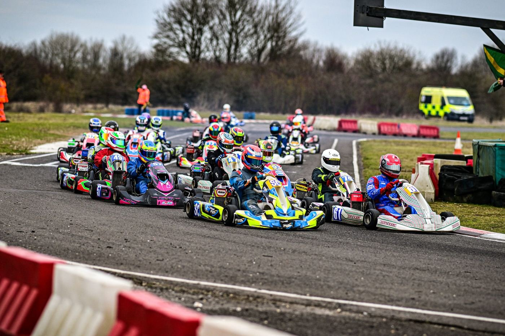
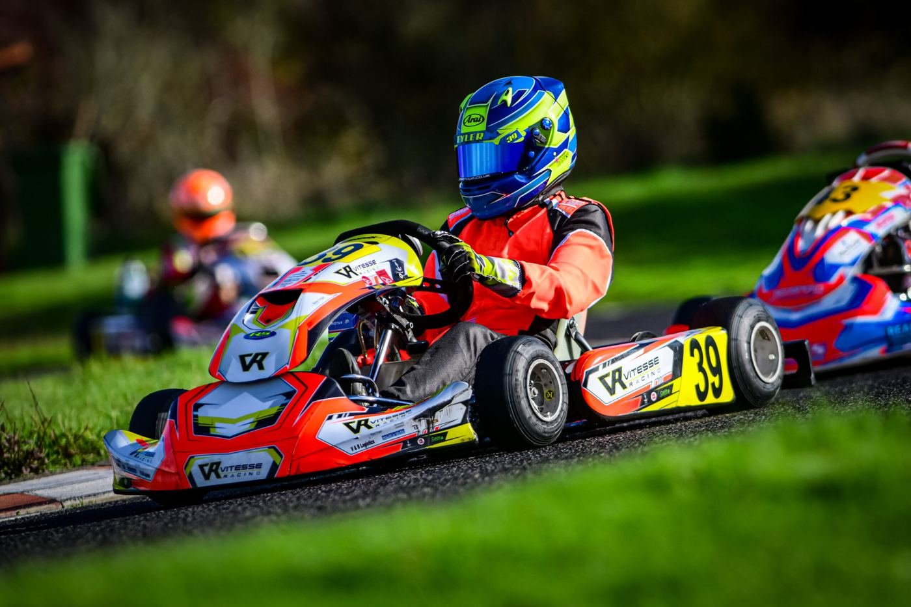
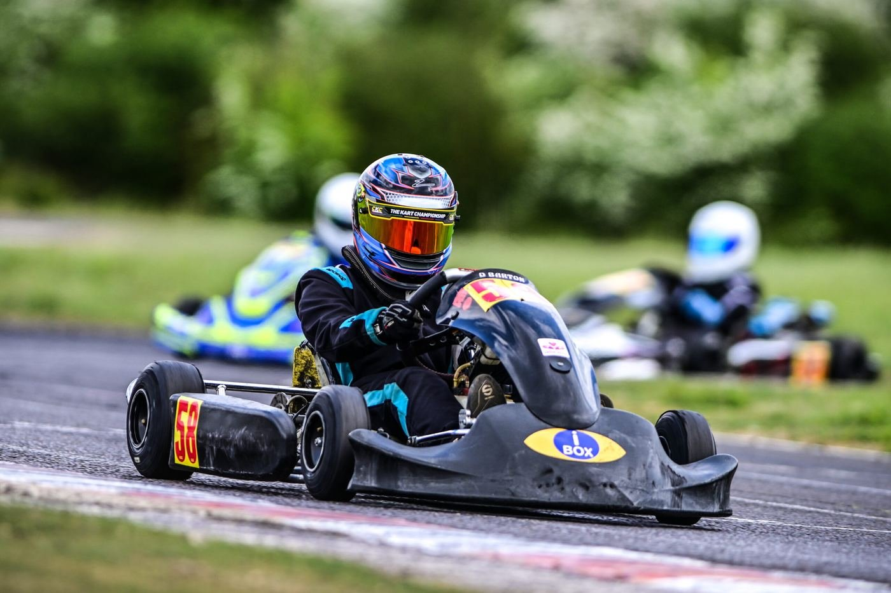
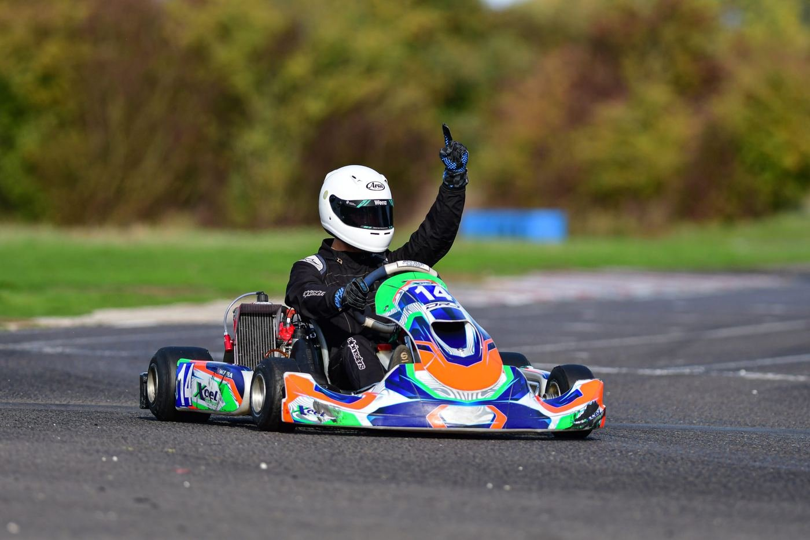

Welcome to
Forest Edge
An owner driver kart club on MOD ground off the A303, racing under a Motorsport UK licence. Nine championship rounds a year, ten classes from Honda Cadet to Superkart, and a circuit of fast straights and technical corner complexes.
Round 7 Practice, Southern Championships
Friday 4th September 2026
0d00h00m00s
One lap.
Three sectors.
Fast straights joined by technical corner complexes, timed in three sectors. Pick a sector to see where the lap is won.
Get on track

Race with us
Nine championship rounds across ten classes, from Honda Cadet to Superkart. Entries open online through Alpha Timing.
How racing works
Practice days
Gates at 07:00, first session at 09:00. No booking form, just sign on at race control. Pre-ARKS sessions need no licence.
Practice day guide
Southern Champs
Three days, one plate. The 2026 Southern Championships run 4–6 September alongside Round 7.
See the formatNine rounds,
March to November.
Round practice on the Saturday, racing on the Sunday, and a mid-month practice day in between. Round 7 is the exception: its practice runs on Friday 4 September, because the Southern Championships take the Saturday.
04 SEPRound 7 Practice, Southern ChampionshipsPracticePractice is on the Friday this round, not the Saturday
05 SEPSouthern ChampionshipsChampionship
06 SEPRound 7 Race DayRace day
19 SEPMid-Month PracticePractice
03 OCTRound 8 PracticePractice
04 OCTRound 8 Race Day & FP4Race day
17 OCTMid-Month PracticePractice
31 OCTRound 9 PracticePractice

Bambino to Superkart.
Forest Edge runs ten championship classes to the current Motorsport UK Karting Yearbook. Pre-ARKS sessions on practice days let a new driver try the circuit before they hold a licence at all.
- Honda Cadet
- Rotax Cadet
- Rotax Inter
- Junior Rotax
- Senior Rotax
- 177 Rotax
- 177 Masters
- KZ2
- Superkart
- 250 Mono
Watch & follow
Live timing
Sector times, positions and gaps through the whole meeting, straight from the transponder feed.
Open live timingLive stream
Race days are streamed on YouTube, so anyone who could not make the trip can still watch the finals.
Watch on YouTubeResults
Heat-by-heat results and championship standings, with every season archived back to 2014.
See resultsOff the A303,
a quarter mile down the lane.
The circuit sits on MOD land between Barton Stacey and Longparish. Set your sat-nav to SO21 3BF, then look for the Raymond Browns sign.
Before you set off
- Gates open at 07:00 on practice and race days.
- Bring cash or card for signing-on at race control.
- No tobacco products anywhere on site.
- No dogs, by order of the MOD. No exceptions.